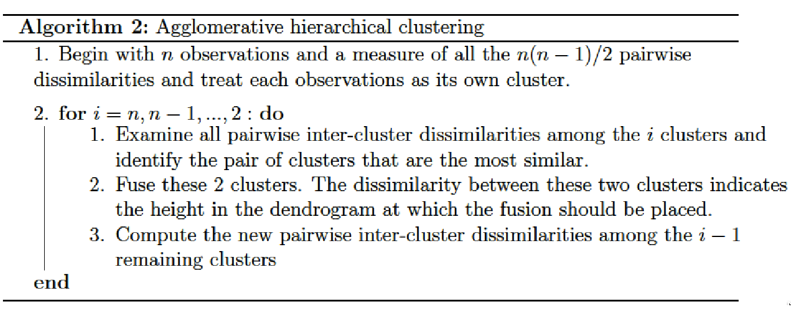
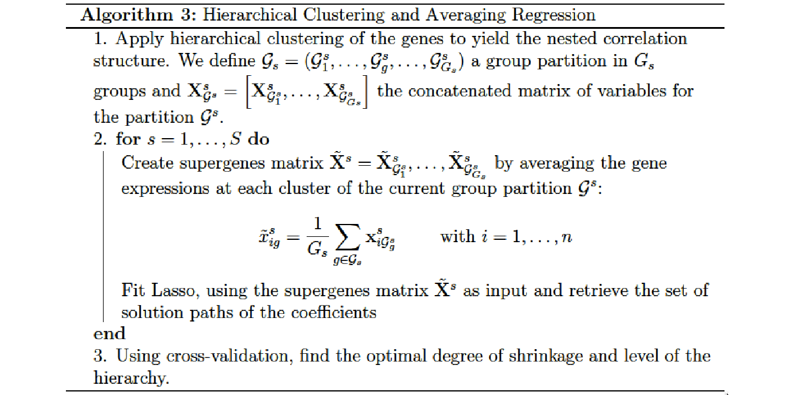

2.5 Combining cluster analysis and variable selection
2.5.1 Hierarchical clustering
Hierarchical clustering is a method of cluster analysis which aims at building a hierarchy of clusters and result in a tree-based representation of the observations called a dendrogram. The term hierarchical refers to the fact that clusters obtained by cutting the dendrogram at a given height are necessarily nested within the clusters obtained by cutting the dendrogram at any greater height.
Strategies for hierarchical clustering generally fall into two types (Rokach and Maimon 2005):
Agglomerative: This is a “bottom up” approach where each observation starts in its own cluster, and pairs of clusters are merged as one moves up the hierarchy.
Divisive: This is a “top down” approach where all observations start in one cluster, and splits are performed recursively as one moves down the hierarchy.
\(\Omega\) being the training set to classify and \(dist\) a measure of dissimilarity (metric) on this set, we define a distance \(LC\) (linkage criterion) between the parts of \(\Omega\). The agglomerative hierarchical clustering algorithm is described in Algorithm 2.

Metric
The choice of an appropriate metric will influence the shape of the clusters, as some clusters may be similar according to one distance or farther away according to another. Given two sets of observations \(A \subset \Omega\) and \(B \subset \Omega\) with \(i\) the index of the \(i^{th}\) observation, the most commonly used metrics are:
Euclidean distance: \(||A - B||_2 = \sqrt(\sum_i(A_i - B_i)^2)\)
Manhattan distance: \(||A - B||_1 = \sum_i |A_i - B_i|\)
Maximum distance: \(||A - B||_{\infty} = \underset{i}{\text{max}} |A_i - B_i|\)
Linkage criteria
The linkage criterion determines the distance between sets of observations as a function of the pairwise distances between observations. Some commonly used linkage criteria between two sets of observations \(A \subset \Omega\) and \(B \subset \Omega\) are:
Single linkage: The dissimilarity between two sets is measured as the minimum dissimilarity between the observations of the sets: \[LC(A,B) = \text{min} \lbrace dist(i,i'), i \in A \text{ and } i' \in B \rbrace\]
Complete linkage: The dissimilarity between two clusters is measured as the maximum dissimilarity between the observations of the groups: \[LC(A,B) = \text{max} \lbrace dist(i,i'), i \in A \text{ and } i' \in B \rbrace\]
Average linkage: The dissimilarity between two clusters is measured as the averaged dissimilarity between the observations of the groups: \[LC(A,B) = \frac{\sum_{i \in A}\sum_{i'\in B} dist(i,i')}{\text{card}(A).\text{card}(B)}\]
Ward’s method
When the set \(\Omega \in \mathbb{R}^D\) to classify is measured by \(D\) variables and where each element of \(\Omega\) is represented by a vector \(\boldsymbol{x}\), we could use the method developed by (Ward 1963) to construct a hierarchy among these variables. We note \(\mathcal{G} = \lbrace \mathcal{G}^1, \dots, \mathcal{G}^s, \dots, \mathcal{G}^S \rbrace\) the group partitions coming from the \(S\) levels of the hierarchical clustering performed on the matrix \(\mathbf{X} \in \mathbb{R}^{n \times D}\).
Given \(\mathcal{G}^s= (\mathcal{G}^s_1, \dots, \mathcal{G}^s_g, \dots, \mathcal{G}^s_{G_s})\) a partition of \(\Omega\) in \(G_s\) groups at a particular level \(s\) of the hierarchy, the within-group inertia is defined as \[I_W (\mathcal{G}^s) = \sum_{g=1}^{G_s} \sum_{\boldsymbol{x} \in \mathcal{G}^s_g} dist^2(\boldsymbol{x}, \bar{\boldsymbol{x}}_g),\] where \(\bar{\boldsymbol{x}}_g\) is the centroid of group \(\mathcal{G}^s_g\).
Equivalently we define the inter-group inertia as \[I_B(\mathcal{G}^s) = \sum_{g=1}^{G_s} \text{card}(\mathcal{G}^s_g) dist^2(\bar{\boldsymbol{x}}, \bar{\boldsymbol{x}}_g),\] where \(\bar{\boldsymbol{x}}\) is the centroid of \(\Omega\).
It can be shown that the total inertia, at a given level \(s\), can be decomposed as \[I_s = I_W (\mathcal{G}^s) + I_B(\mathcal{G}^s).\]
A partition will then be all the more homogeneous as the within-group inertia will be close to 0 and it can be shown that the fusion of two groups necessarily increases the total inertia. It is then possible to propose an agglomerative hierarchical clustering algorithm that fuse, at each step, the two groups \(\mathcal{G}^s_g \in \mathcal{G}^s\) and \(\mathcal{G}^s_{g'} \in \mathcal{G}^s\) that minimize the Ward’s minimum variance criterion:
\[LC( \mathcal{G}^s_g, \mathcal{G}^s_{g'}) = \frac{\text{card}( \mathcal{G}^s_g).\text{card}( \mathcal{G}^s_{g'})}{\text{card}( \mathcal{G}^s_g) + \text{card}( \mathcal{G}^s_{g'})} d^2(\bar{\boldsymbol{x}}_g, \bar{\boldsymbol{x}}_{g'}),\] where \(\bar{\boldsymbol{x}}_g\) and \(\bar{\boldsymbol{x}}_{g'}\) are the centroids of groups \(\mathcal{G}^s_g\) and \(\mathcal{G}^s_{g'}\) respectively.
Estimation of the number of clusters
The choice of the number of groups in cluster analysis is often ambiguous and depends on many parameters of the dataset. Several model selection criteria have already been investigated to makes such a decision (Tibshirani, Walther, and Hastie 2001; Caliński and Harabasz 1974; Krzanowski and Lai 1988). These methods are based on the measure of within-group dispersion \(I_W\).
The gap statistic was developed by (Tibshirani, Walther, and Hastie 2001) to find a way to compare the distribution of \(\log I_W(\mathcal{G}^s)\), \(\mathcal{G}^s = ( \mathcal{G}^s_1, \dots, \mathcal{G}^s_g, \dots, \mathcal{G}^s_{G_s})\), with its expectation \(\mathbb{E}^*[\log I_W(\mathcal{G}^s)]\) under a reference distribution, i.e. a distribution with no obvious clustering. The gap statistic for a given number of groups \(G_s\) is then defined as \[\text{Gap}(G_s) = \mathbb{E}^*[\log I_W(\mathcal{G}^s)] - \log I_W(\mathcal{G}^s).\]
To obtain the estimate \(\mathbb{E}^*[\log I_W(\mathcal{G}^s)]\), \(B\) copies of \(\log I_W(\mathcal{G}^s)\) are generated with a Monte Carlo sample drawn from the reference distribution and averaged.
The gap statistic procedure to estimate the optimal number of groups \(\hat{G}_s^*\) can be summarized as follows.
Step 1 : Construct the hierarchy on \(\mathbf{X} \in \mathbb{R}^{n \times D}\), varying the total number of clusters from \(G = (G_1, \dots, G_S)\) and compute the within-group inertia \(I_W(\mathcal{G})\) for each partition \(\mathcal{G}= (\mathcal{G}^1,\dots,\mathcal{G}^s, \dots, \mathcal{G}^S)\).
Step 2 : Generate \(B\) reference data sets from a uniform distribution over the range of observed values and cluster each one giving \(I_{W}^*(\mathcal{G}^b)\) for each bootstrapped partition \(\mathcal{G}^b= (\mathcal{G}^{b1},\dots,\mathcal{G}^{bs}, \dots, \mathcal{G}^{bS}), b = (1,\dots,B)\). Compute the estimated gap statistic \[\text{Gap}(G_s) = \frac{1}{B} \sum_{b=1}^B \log I_W^*(\mathcal{G}^{bs}) - \log I_W(\mathcal{G}^s).\]
Step 3 : Compute the standard deviation \[sd(\mathcal{G}^s) = \sqrt{\frac{1}{B} \sum_{b=1}^B [\log I_W^*(\mathcal{G}^{bs}) - \bar{b}]^2},\] where \(\bar{b} = 1/B \sum_{b=1}^B \log I_W^*(\mathcal{G}^{bs})\), and define \(SD_s = sd(\mathcal{G}^s) \sqrt{1 + 1/B}\).
Step 4 : Choose the estimated optimal number of clusters via \[\hat{G}_s^* = \text{smallest } G_s \text{ such that } \text{Gap}(G_s) \geq \text{Gap}(G_{s+1}) - SD_{s+1}.\]
2.5.2 Hierarchical Clustering and Averaging Regression
Hierarchical Clustering and Averaging Regression (HCAR) is a method developed by (Park, Hastie, and Tibshirani 2007) that combines hierarchical clustering and penalized regression in the context of gene expression measurement.
The Algorithm 3 can be summarized as follows: At first a hierarchical clustering is applied to the gene expression data to obtain a dendrogram that reveals their nested correlation structure. At each level of the hierarchy, a unique set of genes and supergenes is created by computing the average expression of the current clusters. Then, the different sets of genes and supergenes are used as inputs for a Lasso regression.

Hierarchical clustering proved to be especially adapted in this context because it provides multiple levels at which the supergenes can be formed. Due to the fact that the Euclidean distance measure among the genes is a monotone function of their correlation (when the genes are properly standardized), hierarchical clustering provides flexibility in model selection in such a way that the genes are merged into supergenes in order of their correlation.
(Park, Hastie, and Tibshirani 2007) proved that, in the presence of strong collinearity among the predictors, an averaged predictor yields to an estimate of the OLS coefficients with lower expected squared error than the raw predictors. The authors claimed that this theorem could easily be generalized to a block-diagonal correlation structure. The average features within each block may yield a more accurate fit than the individual predictors.
2.5.3 Multi-Layer Group-Lasso (MLGL)
(Grimonprez 2016) define the Multi-layer Group-Lasso (MLGL) as a two-step procedure that combines a hierarchical clustering with a Group-Lasso regression. It is a weighted version of the overlapping Group-Lasso (Jacob, Obozinski, and Vert 2009) which performs variable selection on multiple group partitions defined by the hierarchical clustering. A weight is attributed to each possible group identified at all levels of the hierarchy. Such weighting scheme favours groups creating at the origin of large gaps in the hierarchy.
We note \(\mathcal{G} = \lbrace \mathcal{G}^1, \dots, \mathcal{G}^s, \dots, \mathcal{G}^S \rbrace\) the group partition coming from the \(s= 1, \dots, S\) levels of the hierarchical clustering performed on the matrix \(\mathbf{X} \in \mathbb{R}^{n \times D}\). \(\mathcal{G}^s = (\mathcal{G}_1^s, \dots,\mathcal{G}^s_{G_s})\) is the group partition at the level \(s\) of the hierarchy and \(G_s\) the total number of groups at the current level.
A group-lasso procedure is then fitted on the concatenated matrix of all group partition at all levels of the hierarchy \[\mathbf{X}_{\mathcal{G}} = \left[ \mathbf{X}^1_{\mathcal{G}^1}, \dots, \mathbf{X}^s_{\mathcal{G}^s}, \dots, \mathbf{X}^S_{\mathcal{G}^S} \right] \text{ where } \mathbf{X}^s_{\mathcal{G}^s} = \left[ \mathbf{X}^s_{\mathcal{G}_1^s},\dots, \mathbf{X}^s_{\mathcal{G}_{Gs}^s} \right].\] The Multi-Layer Group-Lasso solution is defined by:
\[\hat{\beta}^{MLGL} = \underset{\beta}{\text{argmin}} \left\lbrace \frac{1}{2} || \mathbf{y} - \mathbf{X}_{\mathcal{G}} \beta ||_2^2 + \lambda \sum_{s=1}^{S} \rho_s \sum_{g=1}^{G_s} \sqrt{\text{Card}(\mathcal{G}_g^s)} ||\boldsymbol{\beta}_{\mathcal{G}_g^s}||_2 \right\rbrace, \label{eq:MLGL}\]
with \(\lambda \geqslant 0\) the penalty parameter, \(\mathcal{G}_g^s \in \mathcal{G}^s\) the \(g^{th}\) cluster coming from level \(s\) of the hierarchy. The parameter \(\rho_s\) is a weight attributed to each group \(\mathcal{G}_g^s\) and its purpose is to quantify the level of confidence in each level of the hierarchy. This weight is defined by: \[\rho_s = \frac{1}{\sqrt{l_s}}\] with \(l_s = h_{s-1} - h_s\) the length of the gap between two successive levels of the hierarchy. Thus, the weight \(\rho_s\) is minimal when the length of the gap is maximal with the consequence of less penalizing in the groups at the origin of large gaps in the hierarchy.
References
Rokach, Lior, and Oded Maimon. 2005. “Clustering Methods.” In Data Mining and Knowledge Discovery Handbook, 321–52. Springer.
Ward, J. H. 1963. “Hierarchical Grouping to Optimize an Objective Function.” Journal of the American Statistical Association 58 (301): 236–44.
Tibshirani, R., G. Walther, and T. Hastie. 2001. “Estimating the Number of Clusters in a Data Set via the Gap Statistic.” Journal of the Royal Statistical Society: Series B 63 (2): 411–23.
Caliński, T., and J. Harabasz. 1974. “A Dendrite Method for Cluster Analysis.” Communications in Statistics 3 (1): 1–27.
Krzanowski, W. J., and Y. T. Lai. 1988. “A Criterion for Determining the Number of Groups in a Data Set Using Sum-of-Squares Clustering.” Biometrics 44 (1): 23–34.
Park, Mee Young, Trevor Hastie, and Robert Tibshirani. 2007. “Averaged Gene Expressions for Regression.” Biostatistics 8 (2): 212–27.
Grimonprez, Quentin. 2016. “Selection de Groupes de Variables corrélées En Grande Dimension.” PhD thesis, Université de Lille; Lille 1.
Jacob, Laurent, Guillaume Obozinski, and Jean-Philippe Vert. 2009. “Group LAsso with Overlap and Graph LAsso.” In Proceedings of the 26th Annual International Conference on Machine Learning, 433–40. Montreal, Quebec, Canada.